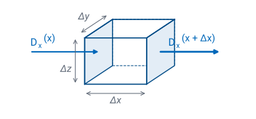
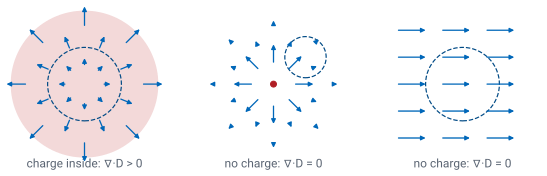

L21 - Gauss’s Law (Differential Form)#
Gauss's Law (Differential Form)
Today we shrink the Gaussian surface to a point and read the charge from the field.
Lesson 21 · Module 2: Electrostatics · Maj Ellis · Dr. Neil Rogers
Learning Objectives
- I can apply the integral and differential forms of Gauss's Law to calculate the electric field due to charge density in various geometries, including rectangular, cylindrical, and spherical coordinate systems.
Lesson 20 derived Gauss’s law in its integral form: the flux out of a closed surface equals the charge inside. That form relates the field on a whole surface to the charge in a whole volume, which made it a tool for finding the field from a symmetric charge. Today we turn it around and make it local. We let the surface shrink around a single point, and the flux per unit volume becomes the divergence of \(\mathbf{D}\). The result, \(\nabla \cdot \mathbf{D} = \rho_v\), is the differential or point form of Gauss’s law, the first of Maxwell’s equations from Lesson 1. It reads the charge density at any point directly from the field there, with no symmetry required.
Where We Were
Lesson 20: Gauss’s law, for any closed surface \(S\) around a volume \(V\):
Lesson 20 derived Gauss’s law from Coulomb’s law: the net electric flux out of any closed surface \(S\) equals the charge enclosed. When the charge is spread through the volume \(V\) inside the surface with a volume charge density \(\rho_v\), in C/m³, the enclosed charge is the integral of \(\rho_v\) over that volume. The law holds for every surface, large or small, and today we exploit the small ones.
Flux per Unit Volume
The divergence of \(\mathbf{D}\) is the net outward flux per unit volume, as the volume shrinks to a point:
The flux out of a closed surface depends on how big the surface is. To get a quantity that describes a single point, we divide the flux by the volume \(\Delta v\) that the surface encloses and let the surface shrink down onto the point. The limit is the divergence of \(\mathbf{D}\) at that point. It is a scalar: positive where more flux leaves a small neighborhood of the point than enters it, negative where more enters than leaves, and zero where the two balance. Lesson 17 introduced the divergence for any vector field; here we apply it to \(\mathbf{D}\), and the next frame turns the definition into derivatives we can compute.
The Divergence From a Small Box

We take the small volume to be a box with edges \(\Delta x\), \(\Delta y\), and \(\Delta z\). Its two faces normal to \(x\) have area \(\Delta y\ \Delta z\). On the far face the outward normal is \(+\hat{\mathbf{x}}\), so the flux out is \(D_x(x+\Delta x)\ \Delta y\ \Delta z\); on the near face the outward normal is \(-\hat{\mathbf{x}}\), so the flux out is \(-D_x(x)\ \Delta y\ \Delta z\). Their sum is \(\Psi_x\), the first line. Dividing by the volume \(\Delta v = \Delta x\ \Delta y\ \Delta z\) cancels the face area and leaves a difference quotient in \(x\), and as the box shrinks it becomes the partial derivative \(\partial D_x/\partial x\), exactly as in Lesson 3. The faces normal to \(y\) and \(z\) give the other two terms in the same way. So in Cartesian coordinates the divergence is the sum of each component’s rate of change along its own direction. Only \(D_x\) changing with \(x\) counts; \(D_x\) changing with \(y\) moves flux along the face, not through it.
The Divergence Theorem
For any volume \(V\) bounded by a closed surface \(S\):
The flux out of \(S\) is the sum of the divergence inside.
Lesson 17 introduced the divergence theorem, and the box shows why it holds. Fill any volume \(V\) with small boxes. Where two boxes share a face, the flux leaving one enters the other, so the two contributions cancel. Adding up every box, only the faces on the outer surface \(S\) survive, and their total is the flux out of \(S\). Each box contributes its divergence times its volume, so the same sum is the volume integral of \(\nabla \cdot \mathbf{D}\). The theorem converts a surface integral into a volume integral, and that is the step we need.
Gauss’s Law at a Point
Now we derive the point form. The first line is Gauss’s law from Lesson 20, with the enclosed charge written as a volume integral. The divergence theorem replaces the flux on the left with the volume integral of \(\nabla \cdot \mathbf{D}\), so both sides are integrals over the same volume. Moving them to one side gives the third line. It holds for every volume, however small and wherever it sits. If the integrand were positive at some point, we could draw a volume small enough to contain only the region around that point, and its integral would be positive, not zero. So the integrand must be zero everywhere, which is the fourth line: the differential form of Gauss’s law. In a material with constant permittivity, it reads \(\nabla \cdot \mathbf{E} = \rho_v/\epsilon\).
The Divergence in Three Coordinate Systems
System |
\(\nabla \cdot \mathbf{D}\) |
|---|---|
Cartesian |
\(\frac{\partial D_x}{\partial x} + \frac{\partial D_y}{\partial y} + \frac{\partial D_z}{\partial z}\) |
Cylindrical |
\(\frac{1}{\rho}\frac{\partial}{\partial\rho}\left(\rho D_\rho\right) + \frac{1}{\rho}\frac{\partial D_\phi}{\partial\phi} + \frac{\partial D_z}{\partial z}\) |
Spherical |
\(\frac{1}{r^2}\frac{\partial}{\partial r}\left(r^2 D_r\right) + \frac{1}{r\sin\theta}\frac{\partial}{\partial\theta}\left(\sin\theta\ D_\theta\right) + \frac{1}{r\sin\theta}\frac{\partial D_\phi}{\partial\phi}\) |
The box derivation used Cartesian coordinates because the faces of a box have fixed areas. The same derivation in cylindrical or spherical coordinates uses a small wedge whose faces grow with radius, and that growth is why the extra factors appear. In the cylindrical form, for example, the curved face at \(\rho + \Delta\rho\) is larger than the one at \(\rho\) by the ratio of the radii, so it is the product \(\rho D_\rho\), not \(D_\rho\) alone, whose change counts. Lesson 17 gave all three forms, and they are on the equation sheet. Choose the system that matches the symmetry of the field: a radial field in spherical coordinates has only one term.
What the Divergence Measures

\(\nabla \cdot \mathbf{D} \ne 0\) only where there is charge.
A field that spreads out is not necessarily diverging.
The three panels show why the divergence is not the same as the field “spreading out.” On the left, inside a region of uniform positive charge, the field grows as it moves outward, so more flux leaves the dashed circle than enters it, and the divergence is positive. In the middle, outside a point charge, the field lines spread apart, but the field weakens as \(1/r^2\) just fast enough that the flux entering the circle on its near side equals the flux leaving on its far side, and the divergence is zero. On the right, a uniform field enters and leaves the circle equally, and the divergence is again zero. The point form says the same thing in one line: the divergence is the charge density, so it is zero wherever there is no charge, however the field looks.
Check: The Point Charge
The field of a point charge is the middle panel. It has only a radial component, so the spherical form has a single term. Multiplying \(D_r\) by \(r^2\) cancels the \(1/r^2\), and the derivative of a constant is zero. The divergence vanishes at every point except the origin, where the formula divides by zero. That is consistent with Gauss’s law: the charge density is zero everywhere except at the one point where the charge sits, and the integral form from Lesson 20 still gives a flux of \(Q\) through any sphere around it.
Worked Example: Charge From a Field
In free space, \(\mathbf{E} = \hat{\mathbf{x}}\ 3x^2 + \hat{\mathbf{y}}\ 2z + \hat{\mathbf{z}}\ x^2 z\) V/m. Find \(\rho_v\) at \((2, -2, 0)\).
Worked example — the charge density from a known field
The field is given in Cartesian components, so we use the Cartesian divergence and take each component’s derivative along its own direction:
\(E_x = 3x^2\) depends on \(x\), and \(\partial E_x/\partial x = 6x\).
\(E_y = 2z\) does not depend on \(y\), so \(\partial E_y/\partial y = 0\), even though \(E_y\) is not zero.
\(E_z = x^2 z\) gives \(\partial E_z/\partial z = x^2\).
In free space, \(\mathbf{D} = \epsilon_0\mathbf{E}\), so
At \(x = 2\) the bracket is \(12 + 4 = 16\) V/m², and the point’s \(y\) and \(z\) coordinates do not enter. The charge density is
The integral form could not have done this: the field has no symmetry, and no Gaussian surface would let us pull it out of the integral.
Worked Example: The Cylinder of Charge
Lesson 20’s cylinder of uniform charge \(\rho_v\), radius \(a\):
Lesson 20 used the integral form to find the flux density of an infinitely long cylinder of uniform charge: \(D_\rho = \rho_v\rho/2\) inside and \(D_\rho = \rho_v a^2/(2\rho)\) outside. The point form lets us check that result. The field is radial and depends only on \(\rho\), so the cylindrical divergence has a single term. Inside, \(\rho D_\rho = \rho_v\rho^2/2\), whose derivative is \(\rho_v\rho\), and dividing by \(\rho\) returns exactly the charge density we started with. Outside, \(\rho D_\rho = \rho_v a^2/2\) is constant, its derivative is zero, and the charge density is zero, as it should be outside the charge. The two forms agree.
Worked Example: Both Forms Give the Same Charge
\(\mathbf{D} = \hat{\mathbf{r}}\ D_0\ r^2/a^2\) for \(r \le a\):
Suppose a ball of radius \(a\) has the radial flux density \(D_r = D_0 r^2/a^2\) inside it. The point form gives the charge density: the spherical divergence of \(D_r\) is \((1/r^2)\ \partial(D_0 r^4/a^2)/\partial r = 4D_0 r^3/(a^2 r^2)\), so \(\rho_v = 4D_0 r/a^2\), a density that grows from zero at the center.
We can count the total charge two ways. Integrating the density over the ball, with the volume element \(r^2\sin\theta\ dr\ d\theta\ d\phi\), the angles give \(4\pi\) and the radial integral gives \((4D_0/a^2)(a^4/4) = D_0 a^2\), for a total of \(4\pi a^2 D_0\). Integrating the flux over the surface \(r = a\), where \(D_r = D_0\), gives \(D_0\) times the area \(4\pi a^2\): the same charge. That agreement is the divergence theorem at work, and either count is a check on the other.
Maxwell’s First Equation
Holds at every point, for static and time-varying fields.
Charge is the source of electric flux.
In a charge-free region, \(\nabla \cdot \mathbf{D} = 0\).
The point form of Gauss’s law is the first of the four Maxwell’s equations listed in Lesson 1. We derived it for static charges, but it holds for fields that change in time as well, and it is one of the equations Module 4 combines to produce electromagnetic waves. In words, it says that electric flux begins on positive charge and ends on negative charge, and nowhere else. In a region with no charge, such as the dielectric of a coaxial cable or the air around an antenna, the divergence of \(\mathbf{D}\) is zero. Lesson 23 combines that fact with the electric potential of Lesson 22 to get Laplace’s equation.
Integral Form or Point Form
Integral form |
Point form |
|
|---|---|---|
Equation |
\(\oint_S \mathbf{D} \cdot d\mathbf{s} = Q_\text{encl}\) |
\(\nabla \cdot \mathbf{D} = \rho_v\) |
Relates |
flux on a surface to charge inside |
field near a point to charge there |
Use it to |
find \(\mathbf{D}\) from symmetric charge |
find \(\rho_v\) from a known \(\mathbf{D}\) |
The two forms are the same law, connected by the divergence theorem, and each answers a different question. The integral form finds the field when we know the charge and the charge is symmetric, as in Lesson 20. The point form goes the other way: given any field, it gives the charge density at every point by differentiation, with no symmetry needed. Integration and differentiation run in opposite directions, and so do the two forms of Gauss’s law.
Summary
Symbol / idea |
What it is |
Number to remember |
|---|---|---|
Divergence |
Net outward flux per unit volume, as the volume shrinks |
\(\lim_{\Delta v \to 0} \oint_S \mathbf{D}\cdot d\mathbf{s}/\Delta v\) |
Cartesian divergence |
Each component’s rate of change along its own axis |
\(\frac{\partial D_x}{\partial x} + \frac{\partial D_y}{\partial y} + \frac{\partial D_z}{\partial z}\) |
Divergence theorem |
Flux out of \(S\) equals the divergence summed through \(V\) |
\(\oint_S \mathbf{D}\cdot d\mathbf{s} = \int_V \nabla\cdot\mathbf{D}\ dv\) |
Point form of Gauss’s law |
Divergence of \(\mathbf{D}\) equals the charge density |
\(\nabla \cdot \mathbf{D} = \rho_v\) |
Charge-free region |
No divergence, however the field looks |
\(\nabla \cdot \mathbf{D} = 0\) |
Point charge, \(r > 0\) |
Field spreads, but its divergence is zero |
\(\frac{1}{r^2}\frac{\partial}{\partial r}\left(r^2 \frac{Q}{4\pi r^2}\right) = 0\) |
Practice
Where This Is Going
Lesson 22: the work to move a charge through the field defines the electric potential \(V\), and \(\mathbf{E} = -\nabla V\).
Lesson 23: \(\nabla \cdot \mathbf{D} = 0\) with \(\mathbf{E} = -\nabla V\) gives Laplace’s equation.
Lessons 18 through 21 described the electric field by its sources: Coulomb’s law and the two forms of Gauss’s law. Lesson 22 describes it a second way, by the work needed to move a charge through it. That work defines the electric potential \(V\), a scalar, and the field turns out to be its negative gradient. Lesson 23 then puts the two descriptions together: substituting \(\mathbf{E} = -\nabla V\) into today’s \(\nabla \cdot \mathbf{D} = 0\) gives Laplace’s equation, which finds the potential between conductors from their voltages alone.
Before Lesson 22, read sections 5.9, 5.10, and 5.15 of Ellingson, Electromagnetics, Vol. 1.